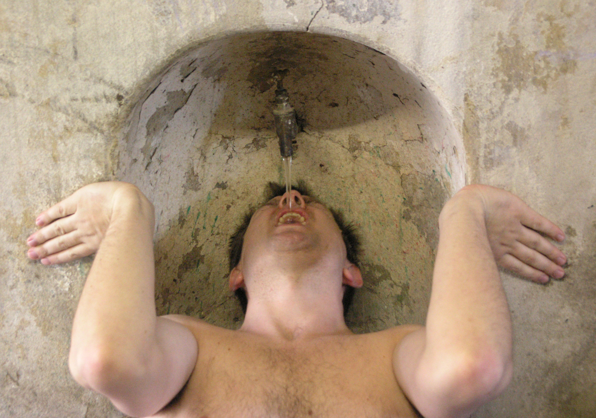

Will Pollard is an artist and writer based in Cheshire. He has shown performance work at the Green Room, Manchester and at the National Review of Live Art, Glasgow and a new installation piece at the Bonington Gallery, Nottingham as part of Sensitive Skin. His work is concerned with the vagaries of performance, in particular the complex relationship between the body and the world.
CV Download